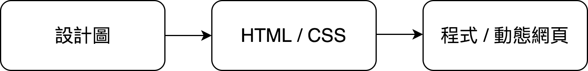
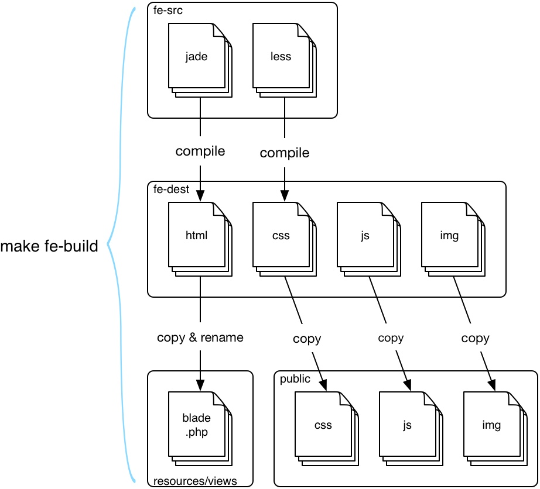

一套使用 jade (pug) 轉為 laravel blade 的前端工作流程
這篇文章介紹一套使用 Laravel 配合 Jade (Pug) 作為樣板引擎的工作流程，這套流程我們已經使用了近三年，解決了許多工程師與設計師在合作上的重工，希望對你們有幫助 :)
傳統的設計師 => 工程師的合作流程
傳統上，設計師在製作完網頁設計圖後，會由切版人員（這個人員可能是設計師自己，也有可能是前端工程師）將設計圖製作成靜態的 HTML 及 CSS，接下來再交給工程師套程式。
|
|

Laravel blade
Laravel 預設是使用 blade 作為樣板引擎作為動態網頁的樣板，它具有良好的 extend 及 include 設計，以下例子說明了 include 的用法：
|
|
layout - view 結構中的 layout。
問題
對 laravel 工程師來說，製作畫面的方法是寫 blade，並且使用 blade 的 layout 與 view 使得我們在修改共用的畫面時只需要修改一次（因為共用的畫面皆有專屬的 blade 代表）。
但真正實行時，才發現此處還隱藏了一個大部分的人習以為常的重工 — 通常 html 及 css 是由設計師提供的，如果頁面已經套完 blade 了，設計師再次修改 html 與 css 會怎麼樣呢？工程師需要將設計師修改的 html、css 與 blade 作比對，將兩著差異更新到 blade 的 layout - view 結構，而且這樣的修改會一再發生。
要怎麼解決這樣的重工呢？我們想到的解法是
「讓設計師學會基本的 laravel 及 blade，與工程師一同修改 blade」
那麽如果設計師喜歡使用 jade (pug) 呢？使用 blade 就沒有 jade (pug) 優美的語法及方便的 mixin 了（註: Laravel 5.4 有 view component 可以使用）。而且使用 blade 必須要有 php 執行環境，如果設計師只想快速驗證畫面，不想要跑起 php server 呢？
於是我們製作了一套將 jade 轉換爲 blade 的工作流程：
改善的流程 - 使用 jade (pug) 產生 blade

見上圖
設計師與工程師寫 jade 及 less ，放在 fe-src ( FrontEnd Source) 目錄中，經過編譯 （compile, 或更貼切地應稱為 transpile) 轉為 html 及 css 至 fe-dest (frontend destination) 目錄，我們也將 javascript 及 image 放到此目錄，於是 fe-dest 目錄就是一個可以直接用瀏覽器預覽的靜態網站了。
在流程的最後，我們也同時自動將這些生成的 html 複製並命名為 .blade.php 到 laravel 的 view 路徑下，同時將靜態資源複製到 public 中，即完成了這套流程。
要如何使用這套流程？
目錄結構
|
|
|
|
|
|
Makefile
|
|
gulpfile.js
|
|
第一次執行
|
|
編譯
|
|
LiveReload
|
|